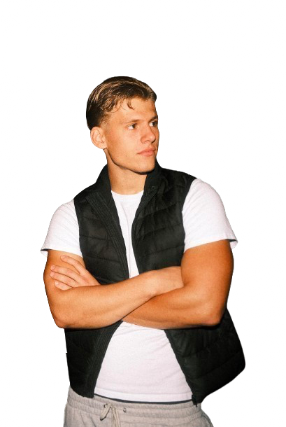
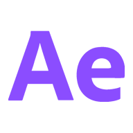
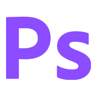
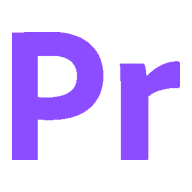
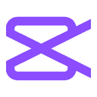
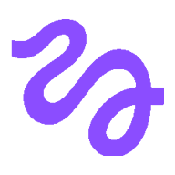
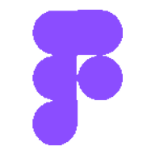
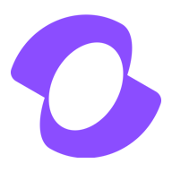
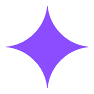
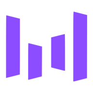

0 / 100
BERLIN · --:--
N

My name is Liam, I am a 21 year old Creative from Berlin. I’m a Videoeditor and Videographer, but I also do other stuff like Filmmaking, Building Websites, Designing and making Rugs. I love to learn new stuff and to explore my creativity in many ways.
@li4m1
After Effects
Photoshop
Premiere
CapCut
Higgsfield
Figma
Kling
Nano Banana
SeedanceAll Visuals made by me
Peace In My Soul
Not everything I make is a film. These are live sites and tools I built and shipped. The previews aren't screenshots, each card runs the product's own code in miniature. Click in and use them.
Have a brief or just an idea? Email me directly — usually a quick reply.